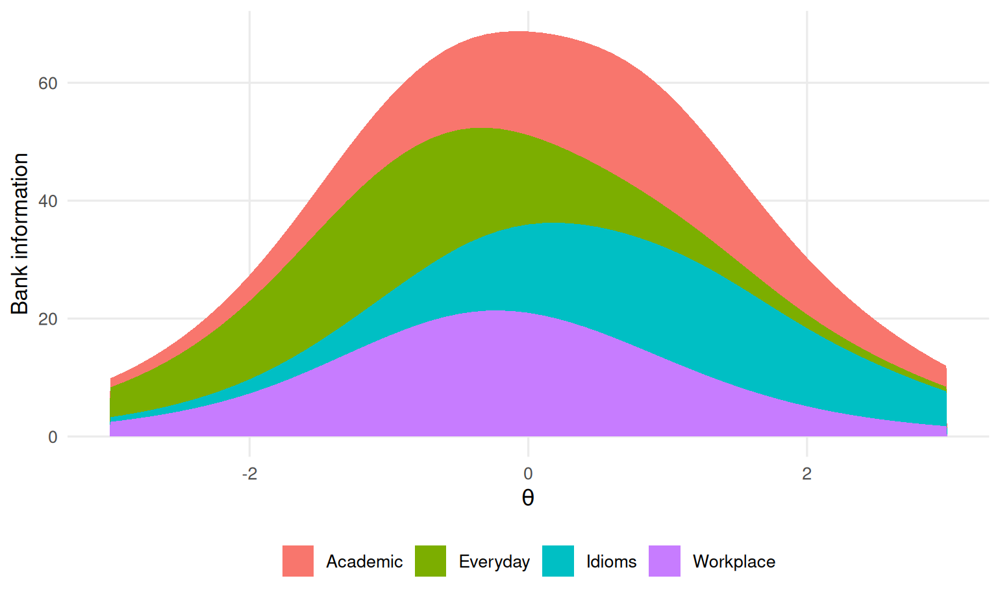
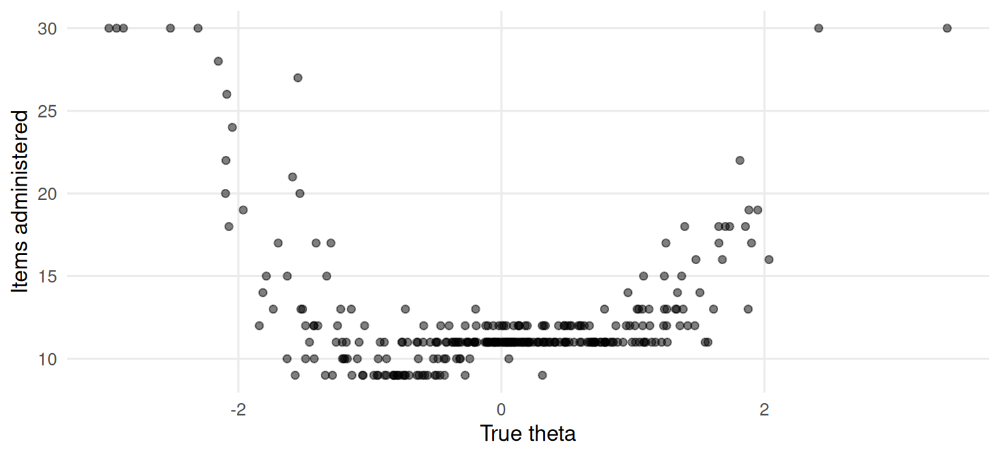

Chapter 11 Item banks, test assembly and adaptive testing
Learning goals. After this chapter you can
- describe what an item bank stores and what it is for;
- read a bank’s information curve and spot where the bank is thin;
- assemble a fixed form from a bank under content constraints;
- explain, step by step, how a computerized adaptive test (CAT) selects items, scores people and decides when to stop;
- judge a CAT design by its precision, test length and item exposure.
Key terms: item bank, automated test assembly, parallel forms, computerized adaptive test, multistage test, exposure.
11.1 The ideas
Once items have been calibrated on a common scale (Chapter 10), their parameters can be stored in an item bank together with their content codes, usage history and review status. Because the parameters are on one scale, any selection of items from the bank yields scores on that scale. That makes two things possible.
Automated test assembly (ATA) picks items for a fixed form so that the form meets a blueprint (for example, ten items from each content area) and its information curve matches a target: High at a cut score for a licensing test, flat across the range for a progress test (Linden 2005). Exact solutions use mixed-integer programming; simple greedy rules, which add the best remaining item that still fits the blueprint, often get close.
A computerized adaptive test (CAT) goes further and builds a different test for every person while they take it (Wainer et al. 2000). The loop is:
- Start with a provisional \(\theta\) (often 0).
- Choose the unused item with the most information at the current \(\theta\), subject to content and exposure rules.
- Score the response and update \(\theta\) (usually by EAP, which works even after one item).
- Stop when the standard error is small enough or a maximum length is reached; otherwise go back to step 2.
A CAT typically reaches the precision of a fixed test with half as many items or fewer. The price is a bank large enough to cover the whole range, and exposure: Without control, the most informative items are given to almost everybody and soon become known. A multistage test (MST) is a compromise: People take pre-assembled modules, and the next module depends on their performance on the last one.
11.2 Example 1: A vocabulary bank and a fixed form
A language-assessment centre has a calibrated bank of 200 vocabulary items in four areas.
# A calibrated 2PL item bank: 200 items, four content areas.
set.seed(1111)
bank <- data.frame(item = sprintf("V%03d", 1:200),
area = factor(rep(c("Everyday", "Academic", "Workplace", "Idioms"),
each = 50)),
a = rlnorm(200, 0.2, 0.3),
b = c(rnorm(50, -0.8, 0.9), rnorm(50, 0.4, 0.9),
rnorm(50, 0, 0.9), rnorm(50, 0.9, 0.7)))The bank’s information curve, overall and by area, shows where it can measure well:
item_info <- function(a, b, theta) {
p <- plogis(a * (theta - b)); a^2 * p * (1 - p)
}
grid <- seq(-3, 3, by = 0.1)
bank_info <- do.call(rbind, lapply(levels(bank$area), function(ar) {
s <- bank[bank$area == ar, ]
data.frame(area = ar, theta = grid,
info = sapply(grid, function(t) sum(item_info(s$a, s$b, t))))
}))
library(ggplot2)
ggplot(bank_info, aes(theta, info, fill = area)) +
geom_area() +
labs(x = expression(theta), y = "Bank information", fill = NULL) +
theme_mirtverse()
Figure 11.1: Information of the 200-item vocabulary bank, stacked by content area.
The bank is rich in the middle and thin at the extremes, especially below \(\theta = -2\) and above \(\theta = 2\). Everyday vocabulary covers the low end, idioms the high end. Item writers should be asked for very easy and very hard items.
Now a 24-item fixed form with six items from each area, to measure well between \(\theta = -1\) and \(\theta = 1\). A greedy assembly adds, one at a time, the item that adds the most information at the target points, as long as its area is not yet full:
assemble_greedy <- function(bank, length, per_area, targets) {
chosen <- integer(0)
while (length(chosen) < length) {
full <- names(which(table(bank$area[chosen]) >= per_area))
cand <- setdiff(which(!bank$area %in% full), chosen)
gain <- sapply(cand, function(i) sum(item_info(bank$a[i], bank$b[i], targets)))
chosen <- c(chosen, cand[which.max(gain)])
}
bank[chosen, ]
}
form <- assemble_greedy(bank, length = 24, per_area = 6, targets = c(-1, 0, 1))
table(form$area)
#>
#> Academic Everyday Idioms Workplace
#> 6 6 6 6Compared with a random 24-item form that meets the same blueprint:
random_form <- do.call(rbind, lapply(split(bank, bank$area), function(s) s[sample(50, 6), ]))
se_at <- function(f, theta) 1 / sqrt(sapply(theta, function(t) sum(item_info(f$a, f$b, t))))
round(rbind(assembled = se_at(form, c(-1, 0, 1)),
random = se_at(random_form, c(-1, 0, 1))), 3)
#> [,1] [,2] [,3]
#> assembled 0.265 0.236 0.276
#> random 0.318 0.304 0.332The assembled form measures more precisely at all three target points with
the same length and blueprint. For real programmes, assemble_forms() in
the mirtverse assessment
pipeline
solves the same problem exactly, builds several parallel forms at once and
handles enemy items (items that must not appear together).
11.3 Example 2: A CAT from scratch
We now write a complete CAT in about 30 lines, using the same bank. The scoring step computes the EAP estimate on a grid of quadrature points, with a standard normal prior.
quad <- seq(-4, 4, length.out = 81)
prior <- dnorm(quad)
eap <- function(a, b, x) {
like <- sapply(quad, function(t) prod(ifelse(x == 1, plogis(a * (t - b)),
1 - plogis(a * (t - b)))))
post <- like * prior / sum(like * prior)
est <- sum(quad * post)
c(theta = est, se = sqrt(sum((quad - est)^2 * post)))
}
cat_one <- function(true_theta, bank, se_stop = 0.3, max_items = 30, top = 1) {
used <- integer(0); x <- integer(0); est <- c(theta = 0, se = 1)
while (length(used) < max_items && est["se"] > se_stop) {
info <- item_info(bank$a, bank$b, est["theta"]); info[used] <- -Inf
best <- order(info, decreasing = TRUE)[seq_len(top)]
item <- if (top == 1) best else sample(best, 1) # randomesque exposure control
used <- c(used, item)
x <- c(x, rbinom(1, 1, plogis(bank$a[item] * (true_theta - bank$b[item]))))
est <- eap(bank$a[used], bank$b[used], x)
}
list(theta = est[["theta"]], se = est[["se"]], n = length(used), items = used)
}Simulate 300 test takers across the ability range. (To run the CAT on your
own bank, replace bank in the data chunk of Example 1; it needs columns
item, area, a and b.)
# Simulated test takers for the CAT: one true theta per person.
set.seed(1112)
true_theta <- rnorm(300)runs <- lapply(true_theta, cat_one, bank = bank)
res <- data.frame(true = true_theta,
est = sapply(runs, `[[`, "theta"),
se = sapply(runs, `[[`, "se"),
n = sapply(runs, `[[`, "n"))
c(mean_length = mean(res$n), rmse = sqrt(mean((res$est - res$true)^2)),
cor = cor(res$est, res$true))
#> mean_length rmse cor
#> 12.337 0.292 0.959On average the CAT reaches a standard error of 0.3 with far fewer than 30 items. Test length depends on where a person is: In the middle, where the bank is rich, the CAT stops quickly; at the extremes it runs out of informative items and goes to the maximum.
ggplot(res, aes(true, n)) + geom_point(alpha = 0.5) +
labs(x = "True theta", y = "Items administered") + theme_mirtverse()
Figure 11.2: Number of items administered by the CAT against true ability.
Exposure is the other side of the coin. With pure maximum-information selection, a few items are given to a large share of test takers:
exposure <- function(runs) {
table(factor(unlist(lapply(runs, `[[`, "items")), levels = 1:200)) / length(runs)
}
exp_max <- exposure(runs)
sort(round(exp_max, 2), decreasing = TRUE)[1:6]
#>
#> 31 100 97 67 135 140
#> 1.00 0.68 0.64 0.60 0.48 0.48The first item is the same for everybody (the most informative item at \(\theta = 0\)), so its exposure is 100%. The randomesque method picks at random among the five most informative items, which spreads exposure at a small cost in test length:
set.seed(1113)
runs_r <- lapply(true_theta, cat_one, bank = bank, top = 5)
exp_r <- exposure(runs_r)
rbind(max_info = c(max_exposure = max(exp_max), mean_length = mean(sapply(runs, `[[`, "n"))),
randomesque = c(max_exposure = max(exp_r), mean_length = mean(sapply(runs_r, `[[`, "n"))))
#> max_exposure mean_length
#> max_info 1.000 12.3
#> randomesque 0.677 12.9Content balancing (for example, cycling through the four areas) works the
same way: Restrict the candidate items before choosing the most informative
one. simulate_cat() in the assessment pipeline runs this kind of
simulation on a real bank, and the mirtCAT package can deliver an
operational CAT.
11.4 Your turn
- Add 20 hard items (\(b \sim N(2.2, 0.4)\)) to the bank in Example 1 and redraw the information curve. What happens to CAT length for the most able test takers?
- Change the stopping rule to \(SE < 0.25\). How do mean length and RMSE change?
- Add content balancing to
cat_one()so that each test has at least four items from every area. (Hint: While an area has fewer than four items, restrict the candidates to that area.) - An admissions officer asks why two applicants got different questions and different numbers of questions. Write a short explanation.
Solutions
set.seed(1114)
hard <- data.frame(item = sprintf("H%02d", 1:20), area = factor("Idioms", levels(bank$area)),
a = rlnorm(20, 0.2, 0.3), b = rnorm(20, 2.2, 0.4))
bank2 <- rbind(bank, hard)
top <- true_theta > 1.5
mean(sapply(lapply(true_theta[top], cat_one, bank = bank2), `[[`, "n"))
#> [1] 14.8
mean(res$n[top])
#> [1] 17.8
runs25 <- lapply(true_theta, cat_one, bank = bank, se_stop = 0.25)
c(mean_length = mean(sapply(runs25, `[[`, "n")),
rmse = sqrt(mean((sapply(runs25, `[[`, "theta") - true_theta)^2)))
#> mean_length rmse
#> 18.963 0.246- The CAT reaches the target precision sooner for the most able test takers, because it now has informative items for them.
- Tests get longer and estimates more precise: Precision costs items.
- For example: “The test adapts to each applicant: After every answer it picks the next question that tells us most about that applicant. Everyone is measured on the same scale, and the test stops when it has measured each person precisely enough, which takes fewer questions for some people than for others.”